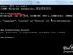
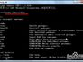
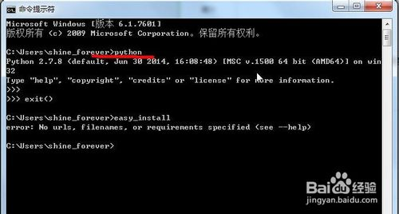
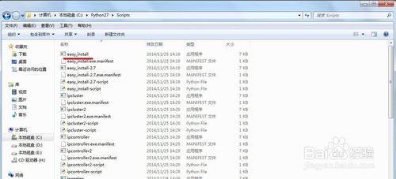
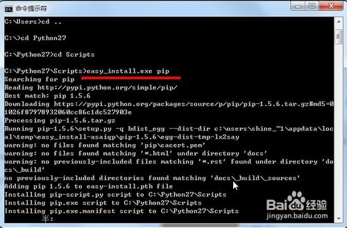
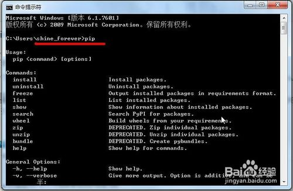

如何在win7下安装python包工具pip|浏览：6001|更新：2014-11-25 15:42|标签：win7 python 1234分步阅读一键约师傅百度师傅高质屏和好师傅，拯救你的碎屏机 百度经验:jingyan.baidu.compip安装包很方便，本教程就告诉你如何安装。百度经验:jingyan.baidu.com工具/原料pythoneasy_install百度经验:jingyan.baidu.com方法/步骤1在安装pip前，请确认你win系统中已经安装好了python，和easy_install工具，如果系统安装成功，easy_install在目录C:\Python27\Scripts 下面，确认截图如下：步骤阅读步骤阅读2进入命令行，然后把目录切换到python的安装目录下的Script文件夹下，运行 easy_inatall pip步骤阅读3pip安装成功后，在cmd下执行pip，将会有如下提示.步骤阅读END百度经验:jingyan.baidu.com注意事项安装pip前，系统要已经安装完成python和easy_install，并且设置了环境变量。经验内容仅供参考，如果您需解决具体问题(尤其法律、医学等领域)，建议您详细咨询相关领域专业人士。举报作者声明：本篇经验系本人依照真实经历原创，未经许可，谢绝转载。


![]()